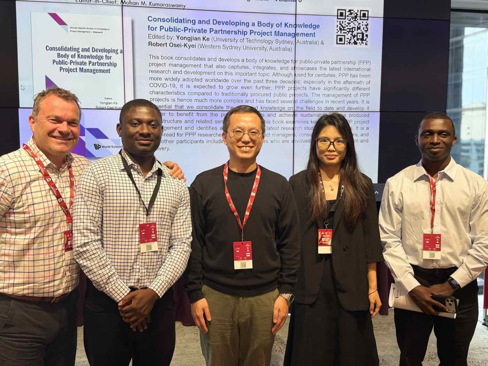

At AUBEA 2026 we launched Consolidating and Developing a Body of Knowledge for Public-Private Partnership Project Management (World Scientific), which I edited with Robert Osei-Kyei. It is the sixth volume in the series Domain-Specific Bodies of Knowledge in Project Management, edited by Professor Mohan Kumaraswamy. The launch was a joint one with the seventh volume, Smart Villages and Sustainable Rural Development: Building a Body of Knowledge for a Climate-Positive Future, edited by Hemanta Doloi, Koshy Varghese and George Ofori.

At the launch, in front of the book’s display slide.
Why PPP needs its own body of knowledge
General project management bodies of knowledge assume a project that ends when the asset is handed over. A public-private partnership does not. Its contract runs for twenty to thirty years and cannot foresee every change. Risk is transferred and then written into enforceable contract terms. Payment is tied to measured service performance. Design and construction are decided with decades of operation and maintenance in view, and stakeholders and public perception keep mattering long after construction ends. Sustainability and community impacts have to be weighed against financial viability throughout.
Four decades of PPP practice have produced a great deal of learning about all of this, but it has been recorded ad hoc, across countries and research traditions that rarely read each other. The book is an attempt to put it in one place and in one structure.
How the book is built
The framework runs to eighteen chapters by 36 authors, organised around four stages of the PPP life cycle:
- Identification and preparation: project briefing, procurement strategy, unsolicited proposals and value for money.
- Structuring: risk allocation and structuring, and performance objectives and criteria.
- Tender and award: delivery modes and sustainable project finance.
- Contract management: service delivery and performance monitoring, dispute and conflict management, renegotiation and early termination.
Chapters on critical success factors and failure mechanisms frame the whole, and chapters on stakeholder management and life-cycle evaluation run across it. Chapter 1 sets out the background, needs and methodology, and Chapter 18 synthesises the framework. Each chapter was written by researchers with sustained work on its topic, many of them through their doctoral research. The audience we had in mind is PPP researchers, financiers, project managers, consultants and policy makers.
The session
The launch was a ninety-minute hybrid session in the Peter Shergold Building on Western Sydney University’s Parramatta City campus, with some speakers and chapter authors joining online. Mohan opened it online with an introduction to the series. For our book, Professor Albert P.C. Chan, Distinguished Research Professor at the Hong Kong Polytechnic University, who wrote the Foreword and co-authored the chapter on critical success factors, gave the opening remarks. After a short outline of the book, three chapter authors joined a panel, one from each of three life-cycle stages:
- Associate Professor Marcus Jefferies (University of Newcastle): Chapter 4, a systematic framework for the briefing process of PPPs.
- Dr Isaac Akomea-Frimpong (Excelsia University College): Chapter 11, sustainable project finance for PPP projects.
- Dr Linna Geng (Western Sydney University): Chapter 12, service delivery and performance monitoring through a reliability-based methodology.
The questions prepared for the panel were these:
- What does PPP project management require that a general project management body of knowledge does not adequately cover?
- How does briefing for a PPP differ from briefing for a conventionally procured project, and at what point do public clients most often get it wrong?
- When a PPP is financed sustainably, what actually changes in practice: who provides the money, how much it costs, how risks are shared, or what is monitored once the asset is in operation?
- Most PPP contracts monitor performance through KPIs and payment abatements. What does a reliability-based approach tell a public agency that the abatement record does not?
- What is the one message about PPP project management that you would like the audience to take away?
Hemanta Doloi then led the launch of Volume 7, and the two editor teams closed the session together with questions from the floor. Several chapter authors, including Professor Eric Zhang in Hong Kong, made the time to attend on Zoom.
Thanks
To Western Sydney University, our conference host, and especially Professor Srinath Perera and Professor Xiaohua (Sean) Jin, for giving us time and space in the program. To Mohan, for inviting us to develop this book and for his support throughout. To my co-editor, Robert Osei-Kyei, for a smooth collaboration from start to finish. To Albert Chan, for writing the Foreword and delivering the opening remarks. To Marcus Jefferies, Isaac Akomea-Frimpong and Linna Geng, for joining the panel and sharing their perspectives. To all 36 contributing authors, whose work made the book possible. And to my colleagues and the many AUBEA attendees who came to the launch to show their support.
A first edition
We see this book as a first edition of a body of knowledge for PPP project management, not the last word on it. The slide we closed on said the same thing more plainly: a first version, to be tested against practice and updated as PPP practice changes. We hope it will continue to be tested and refined through research and practice.